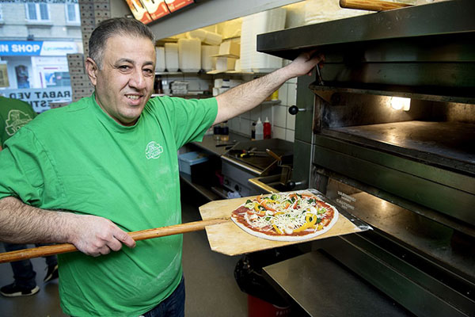
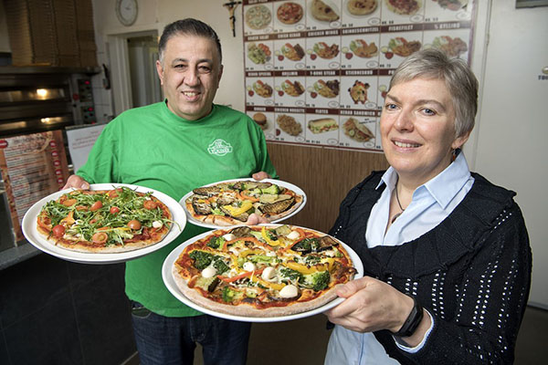
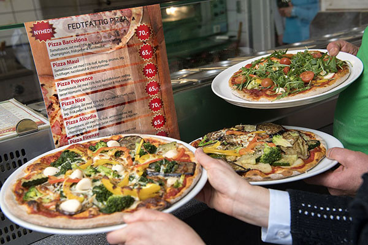
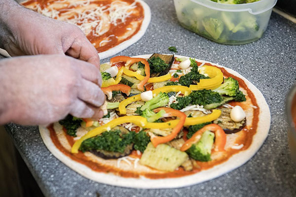

Historien begynder helt tilbage i 1985, da Samir Sada, født i Bagdad Irak, kom til Aalborg i Danmark med sin kone og hans første søn. Igennem arbejde for hans far i deres eget bageri siden han var 6, har han fået meget erfaring indenfor madindustrien, så et par år senere åbnede han sin første restaurant lokaliseret i Aalborg. Efter det næste årti skiftede hans forretning mange gange, så han ejede et par steder, alle med samme baggrund. I år 2000, efter nogle hårde tider, formår han at blive ejer af den gamle og kendte Younes Grill & Pizza, restauranten som han siden da har ejet. Lokaliseret i centrum af Aalborg, har hans pizzeria leveret deres glade kunder med det lækreste mad i et hyggeligt familievenligt miljø. De lokale skylder væksten af hans dejlige mad, service, kunder og selvfølgelig hans fantastiske team bestående af hans familie.
 Vi giver vores loyale kunder hvad de vil have, leverer lækker mad og enestående kundeservice. Restauranten tilbyder en hel menu med pizza, burgers, pasta, sandwiches og endnu mere. Alt lavet med de friskeste ingredienser. Younes Grill & Pizza leverer kunderne daglige tilbud med lave priser, samt en komfortabel spiseoplevelse med familien.
 